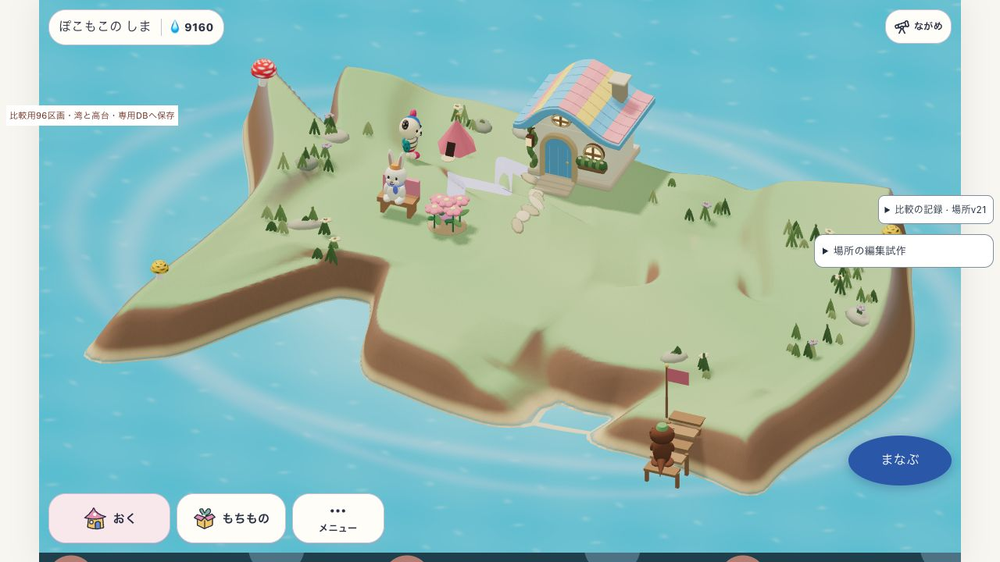
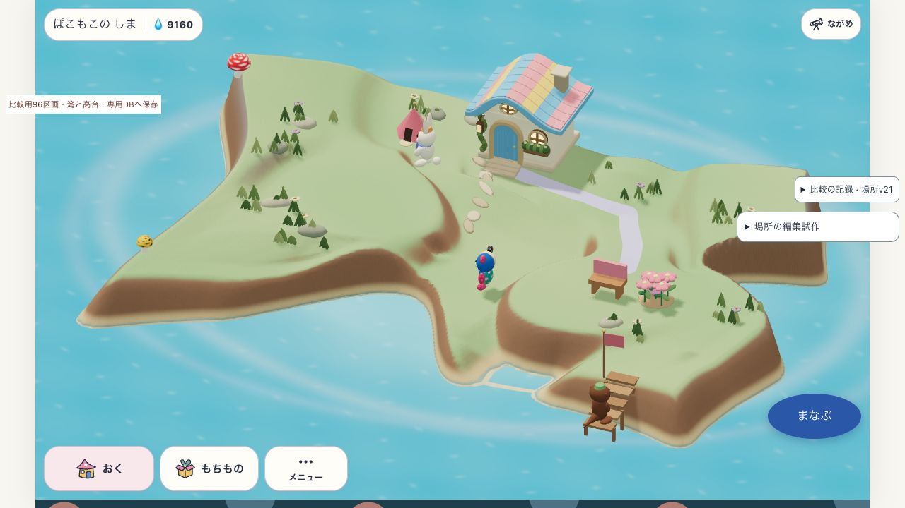
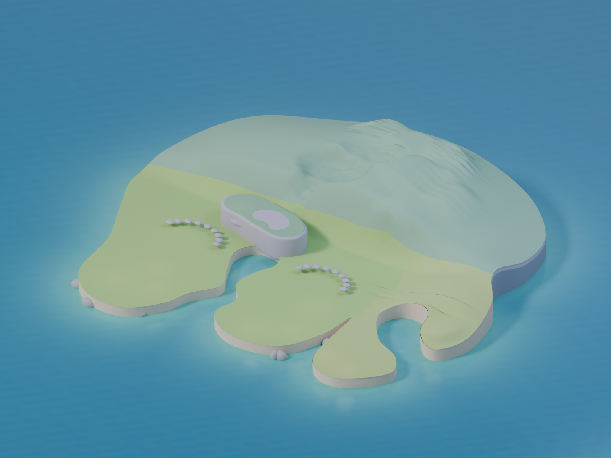

SANSU · 二構成の実証 · 2026-10-24 12:47開始
形は変えられる。
安心して暮らせる島には、まだ条件がある。
現在の高さ場は継続候補です。通常操作で異なる島を作り、保存再開と住人の利用まで確認しました。湾による道の切断は仕様で想定されています。足場・再探索・実際の利用を分けて検証し、全島の完成や任意の配置の合格には広げません。
検証の目標：同じ96区画・持ち物・残高から、実際に二通りの島を作り、編集・暮らし・保存がつながるかを判断する。完成模型の切替や住人の強制移動は使っていません。製品版の完成・公開・実機合格とは別の試作です。
同じ持ち物で作った二つの島
Aは西側の低い庭、Bは東の庭と中央の低地。Bの中央12区画は、通常編集で合計35段下げています。地形と家具の配置を変えた実画面で、単なる色やカメラの違いではありません。

A：西にベンチと花。二つの低い高台、左側に二つの湾。
B：東に同じベンチと花。中央を下げ、手前と右側に湾。このv21の画像は、二湾の比較版です。Aで2地点、Bで5地点が、歩ける地面として残るのに家から到達できなくなりました。この切断だけで仕様違反とは判定しません。無人の全地点への接続を永久に維持する条件を追加したところUndoまで止まったため、その過剰な条件は不採用です。
歩行地点の接続変化 · AのUndo/Redo · BのUndo/Redo · Aの再読込 · Bの再読込
参考を分解して、判断を修正
 参考native05：大樹・水庭・建築・道を含む完成景観。
参考native05：大樹・水庭・建築・道を含む完成景観。
同じBlender原本・カメラ・照明で、植生と建物を非表示。参考にも広い平面がある。「広い平面が残るから高さ場方式は無理」とは判断できません。参考の豊かさには、場所を形づくる大樹や水庭の寄与が大きいからです。現在の試作とは所有物の量が違います。一方、試作の長い外壁、鋭い角、急な立ち上がりは、海岸の構成規則の課題として残ります。
水庭・通路も残した分解図 · 原本不変・カメラ・表示対象の記録。この分解は原因を切り分けるための表示で、完成提案ではありません。
美術の差を、原因ごとに分ける
| 見る点 | 二構成から分かったこと | 残る検証 |
|---|
| 大きな輪郭 | 湾の位置と内部低地で、A/Bの形は区別できる。 | 後方の長い壁と角の急な立ち上がり。現在の外周を丸めるだけでは限界がある。 |
| 面と入口 | 庭の平面と坂を守り、家具を置いて使える。Bは低地と庭が分かれる。 | 独立した丸い高台から、森・水庭・集落のまとまりへつながる造形。 |
| 素材と岸 | 地面・壁・水際を同じ実床から描く。見かけの床は足していない。 | 大きい土壁の面、草から岸への見え方。材質だけで構成の弱さを埋めない。 |
| 大小と密度 | 今回の二構成は同じ家・ベンチ・花で比較した。 | 参考の大樹・水庭・15軒の景色とは構成要素が違う。同じ成熟した所有数の比較が必要。 |
| 余白 | 参考の分解でも広い面は残る。空地があること自体は失敗ではない。 | 主景を囲む余白と通路として読めるか。今回の疎な配置だけでは未証明。 |
作者による実画面比較です。独立した視覚監査・利用者の採用ではありません。原本レンダーと本体rendererの光・カメラは同一ではなく、画素差を品質点数に変換していません。
何が確認でき、何が残ったか
| 判断する項目 | 現在の結果 |
|---|
| 実際に編集できるか | 通常UIで湾・高台・入口・家具配置を変更。二構成を再現。
| 暮らしにつながるか | A/Bとも保存再開後の新しいベンチ・花の利用を観測。全経路や全ての足の接触を保証するものではない。
| 保存・履歴 | 専用DBで再読込とUndo/Redoを照合。writerの重複・競合・失敗時のロールバックも対象試験。本人の島や学習同期は未接続。
| 地形の安全 | 固定物・家具・人物の足場と高台の到達性を保護。Aの2地点/Bの5地点に人物がいる変更は拒否し、保存不変。現在の足場を損なうUndoも拒否。A/B各300フレームの診断で現在地保持・古い経路の破棄・支持された移動を確認。全配置や実物の接触を保証するものではない。
| 美術・操作感 | 二構成の違いは見える。全島の美術、実機での快適さ、子どもの理解・再訪は未達。
v22の「以前歩けた全地点を常に接続する」案は不採用です。現行仕様52 §1.1は道の切断と再探索を認めており、追加条件が合法なUndoまで拒否しました。条件を強めた試験のFAILを、そのまま製品仕様のFAILと読み替えません。
操作時の待ちは、まだ大きい
v21で湾の奥行きを一度変えると、画面更新の間隔が最大1,316.7ms空きました。通常時の中央値は16.7ms。同期commandは1,324.7msで、その内側の地形再生成は1,116.4msでした。入れ子の時間は足し合わせません。
これはこのPC・この1操作の観測です。他のシステム負荷は統制しておらず、以前の値からの純粋な悪化やスマートフォン性能を示しません。それでも今回の操作が滑らかだったとは判定できません。形を組む処理と経路の計算を、画面操作を止めずに扱う方法の検証が残ります。
クリック・長い処理・描画間隔・CPU区間 · 人物の足場とUndo・保存の検査 · 実GrowingLifeによる再探索診断
この結果から、次に確かめること
高さ場を全面的に捨てる根拠はありません。ただし、地形の細かな係数を調整し続けても、参考の暮らす景色には届きません。実床・経路を共有したうえで、家・庭・水辺がひとまとまりの場所になる構成を、同じ所有物数の二配置で比較する必要があります。海岸の構成と場所の美術を、別々の合否で扱います。
チャッピーとは文章で検討しました。参考画像・コードは共有していないため、独立した視覚監査とは呼びません。相談記録 · 検証契約と経過 · 前の3時間枠の比較は同じフォルダーの current-review.html に保存